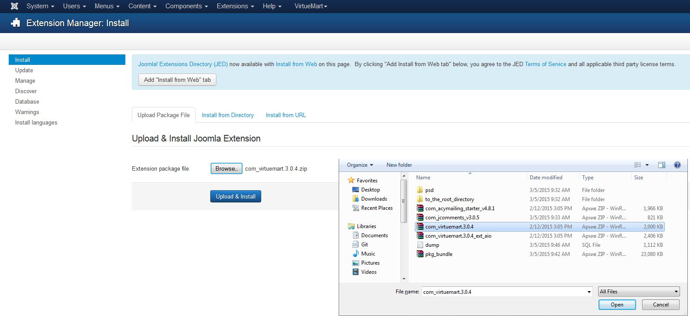
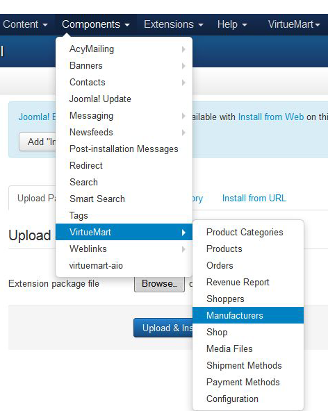

Введение Что находится в шаблоне и для чего его можно использовать
Благодарим Вас за приобретение шаблона Joomla. Данная документация состоит из нескольких частей и охватывает весь процесс установки и настройки веб-сайта Joomla! с нуля. Мы сделали все возможное, чтобы это руководство было понятным и удобным в использовании.
Что представляет собой Joomla! CMS?
Joomla! CMS - это открытое программное обеспечение для построения веб-сайтов. Оно позволяет создавать веб-сайты и мощные онлайн приложения, а также почти не требует технических навыков или знаний в управлении. Множество особенностей, в том числе простота использования и расширяемость, сделали Joomla! наиболее популярной программой для веб-сайтов. Детали
Что такое шаблон Joomla?
Шаблон Joomla! - это тема для платформы Joomla! CMS. Другими словами, внешний вид веб-сайта Joomla! можно легко изменить путем установки нового шаблона за несколько несложных шагов. При всей своей простоте, шаблон Joomla! содержит все необходимые исходные файлы, которые можно редактировать желаемым образом.
Что такое VirtueMart 3.0?
VirtueMart - это открытое программное обеспечение для интернет-магазина, созданное на основе платформы Joomla! CMS. VirtueMart устанавливается на движок Joomla! как компонент или плагин.
Запускается VirtueMart в виде торговой корзины или в режиме каталога. Для создания интернет-магазина прежде всего необходимо установить платформу Joomla! CMS, а затем установить и настроить VirtueMart. Детали
Структура шаблона
Приобретенный комплект шаблона состоит из нескольких папок. Осмотрим содержание каждой папки:
- Documentation - содержит файлы документации.
- documentation.html - основной файл документации. Вы его сейчас читаете :)
- Joomla - содержит архив с темой Joomla, версию для быстрой установки и файл со скриптом для распаковки архива.
- theme###.zip - архив с темой. Включает все файлы темы. Нужно устанавливать с помощью менеджера расширений Joomla.
- fullpackage.zip - представляет собой комплект для полной установки Joomla с файлами движка, темы и демо-данными (дамп базы данных, образцы изображений).
- unzip.php - файл, используемый для распаковки архива fullpackage.zip после загрузки на хостинг-сервер.
- Screenshots - содержит скриншоты темы.
- Sources - вмещает исходные файлы и файлы демо-данных темы:
- psd - исходные файлы шаблона для Adobe Photoshop(.psd).
- to_the_root_folder - папка с образцами данных, необходимых для того, чтобы веб-сайт выглядел как демо шаблона. Содержимое данной папки нужно загрузить в корневую директорию установки Joomla.
- dump.sql - файл дампа базы данных. Вмещает демо-данные темы.
- pkg_bundle.zip - включает дополнительные расширения для темы.
- fonts_info.txt - содержит ссылки, по которым можно скачать шрифты шаблона.
- info.txt - инструкция по распаковыванию исходных файлов.
Подготовка Что нужно сделать перед началом работы
Прежде, чем перейти к установке веб-сайта Joomla, нужно полностью подготовиться. Рекомендуется выполнить следующие подготовительные шаги:
Программное обеспечение
Для полноценной работы с шаблоном Joomla! мы рекомендуем скачать все требуемые приложения. Список необходимого программного обеспечения находится на странице предпросмотра шаблона.
Требования для различных шаблонов могут меняться, поэтому мы перечислим лишь основные:
- Прежде всего нужны правильные приложения для распаковывания защищенного паролем архива sources_#########.zip. Можно воспользоваться WinZip 9+ (Windows) и Stuffit Expander 10+ (Mac).
- Также может понадобиться программа Adobe Photoshop. Она используется для редактирования исходных файлов .PSD и необходима, если требуется изменить графический дизайн и изображения шаблона.
- Для редактирования исходного кода файлов шаблона нужно использовать редактор кода, например, Adobe Dreamweaver, Notepad++, Sublime Text и т.п.
- Чтобы загрузить файлы на хостинг сервер, потребуется FTP менеджер, например, Total Commander, FileZilla, CuteFTP и т.д.
Хостинг
Поскольку Joomla! CMS является приложением PHP/MySQL, необходимо подготовить хостинг сервер.
При наличии активного сервера, нужно проверить его на соответствие требованиям Joomla и на готовность использовать веб-сайты Joomla.
Также можно установить Joomla! на компьютер при помощи локального сервера. Для создания локального хостинг сервера необходимо использовать программное обеспечение WAMP, AppServ, MAMP и т.п. Любое из них устанавливается как обычная программа и поддерживает Joomla.
Вы можете воспользоваться следующими туториалами для настройки локального сервера:
Начало использования Куда нажимать, чтобы приступить к работе
Полная установка
У меня нет веб-сайта Joomla! и я хочу установить его с нуля.
При помощи этого метода устанавливаются движок Joomla! CMS, шаблон Joomla, демо-данные и все требуемые расширения.
Установка шаблона
"У меня уже есть веб-сайт Joomla! и я лишь хочу поменять его внешний вид путем установки нового шаблона."
Данный метод устанавливает шаблон Joomla! и все требуемые расширения.
Полная установка
Полная установка используется в том случае, если нужно установить веб-сайт Joomla! с нуля. Предусматривается предварительное выполнение всех подготовительных шагов и наличие необходимых программ.
Создание базы данных
Когда все файлы будут загружены на хостинг сервер, необходимо подготовить новую базу данных для веб-сайта Joomla. Ее можно создать через инструмент управления базами данных в контрольной панели хостинга (обычно PhpMyAdmin).
При помощи phpMyAdmin возможно создать новую базу данных в 3 простых шага: (см. следующие слайды)
- Щелкните кнопку Database (база данных) в верхнем меню навигации, чтобы перейти в список баз данных.
- Введите название базы данных в поле "Create new database (Создать новую базу данных)".
- Нажмите справа на кнопку Create (Создать).
База данных появилась в списке. Кликните по ее названию, чтобы получить доступ к ней:
-
1. Откройте вкладку "Database (База данных)", чтобы перейти в список баз данных.
-
2. Введите название базы данных.
3. Щелкните кнопку "Создать". -

4. База данных появилась в списке. Кликните по названию, чтобы получить доступ в базу данных.
Вы также можете воспользоваться детальным видео туториалом Как создать базу данных
При возникновении сложностей при создании базы данных, необходимо обратиться к хостинг провайдеру за поддержкой.
Загрузка и разархивация
Для начала работы с Joomla, требуется загрузить файлы на хостинг сервер. Это можно сделать при помощи файлового менеджера хостинга или альтернативного FTP менеджера.
- Откройте шаблон и перейдите в папку 'joomla'.
- Выделите файлы 'unzip.php' и 'fullpackage.zip' и загрузите на сервер ( Как загрузить файлы на сервер. )
- Введите путь к файлу 'unzip.php' на сервере(http://your_domain_name/unzip.php) в адресной строке браузера.
- Должно появиться следующее окно:

Рис 1. Стартовый экран скрипта unzip.php.
- В поле 'Choose your zip file (Выберите файл zip)' выберите загруженный файл fullpackage.zip.
- В поле 'Unzip to (Распаковать в)' укажите директорию, куда нужно распаковать файлы.
- Нажмите кнопку 'Unzip (Распаковать)', чтобы распаковать файлы.
Задайте правильные разрешения на папку, куда нужно разархивировать файлы. Разрешения должны быть CHMOD 755 или 777 в зависимости от конфигурации сервера.
Установка Joomla! CMS
Проверьте выполнение всех подготовительных шагов и наличие требуемых программ.
Откройте браузер и пропишите путь к директории Joomla! в адресной строке браузера (например, http://your_domain_name/joomla). Должен появиться экран установки Joomla! CMS:
Шаг 1Configuration (Конфигурация сайта)
В выпадающем меню "Select Language (Выбрать язык)" выберите язык установки Joomla.
Внимание: выпадающее меню "Select Language (Выбрать язык)" позволяет выбрать лишь язык процесса установки Joomla. Данная опция не влияет на язык веб-сайта.
Нужно заполнить все поля формы в разделе "Main Configuration (Основные настройки)". Обязательные поля отмечены звездочкой *.
Заполните поля "Admin Email (Email администратора)", "Admin Username (Имя администратора)" и "Admin Password (Пароль администратора)" в правой колонке, чтобы создать пользователя нового веб-сайта Joomla! с административными правами.
"Admin Email (Email администратора)", "Admin Username (Имя администратора)" и "Admin Password (Пароль администратора)" требуются для доступа в админ панель веб-сайта Joomla! Web. Храните их в надежном месте.

Рис 2. Установка. Joomla! CMS. Шаг 1. Конфигурация сайта
Когда все данные введены, нажмите кнопку в верхнем правом углу.
Шаг 2 Database (Конфигурация Базы Данных)
На втором этапе установки Joomla! CMS необходимо ввести детали базы данных. Если они неизвестны, обратитесь к хостинг-провайдеру.
Поскольку Joomla! устанавливается с нуля, нужно всего лишь ввести "Host Name (Название хостинга)", "Username (Имя пользователя)", "Database Name (Название базы данных)" и "Password (Пароль)". Остальные опции следует оставить по умолчанию, хотя возможны различия в зависимости от хостинг-провайдера.

Рис 3. Установка Joomla! CMS. Шаг 2. Конфигурация Базы Данных
Когда введете детали, щелкните кнопку в верхнем правом углу.
Шаг 3(Overview) Обзор
Установка Joomla! CMS почти завершена. На этапе Overview нужно определиться с установкой демо-данных Joomla.
Внимание: Демо-данные необходимы, если требуется, чтобы веб-сайт Joomla! выглядел полностью как на демо со всеми изображениями, текстом и настройками модулей. Для этого выберите демо-данные под названием "sample_theme###", где ### является номером темы.
Выберите демо-данные для установки или нажмите "None (Нет)", если необходим пустой веб-сайт Joomla! без содержимого.
Рис 4-1. Установка Joomla! CMS. Шаг 3. Overview (Обзор). Импорт демо-данных
Ниже можно проверить, являются ли детали конфигурации базы данных и доступа в админ панель действительными, и отправить их на email.
Рис 4-1. Установка Joomla! CMS. Этап 3. Обзор. Конфигурация
Можно проверить настройки установки и проверить соответствие хостинг сервера требованиям Joomla. Если присутствуют красные предупреждения в "Recommended settings (Рекомендуемые настройки)", обратитесь к хостинг-провайдеру за дальнейшей поддержкой.

Рис 4.Установка Joomla! CMS. Шаг 3. Настройки сервера
По окончанию нажмите кнопку в верхнем правом углу.
Шаг 4 Установка Завершена
Поздравляем! Вы установили Joomla.

Рис 5. Установка Joomla! CMS. Шаг 4. Установка завершена
С целью повышения безопасности удалите папку "Installation" из корневой директории Joomla! .
Подсказка: Вы можете воспользоваться детальным видео туториалом: Как установить движок Joomla! 3.
Внимание: если вы выполнили "Complete Installation (Полную установку)", можно пропустить разделы "Template Installation (Установка шаблона)", "Sample data installation (Установка демо-данных)" и "Extensions Installation (Установка расширений)", поскольку все эти элементы уже полностью установлены.
Теперь можно приступить к настройке веб-сайта Joomla! CMS. Нажмите кнопку "Site (Сайт)", чтобы открыть веб-сайт или "Administrator (Администратор)", чтобы перейти в админ панель Joomla.
Последним, но не менее важным, шагом является обновление базы данных:
- Перейдите в меню Components->VirtueMart->Configuration->Configuration-> (Компоненты->VirtueMart->Настройки->Настройки), прокрутите станицу вниз до секции "Advanced Settings (Дополнительные параметры)", выделите опцию "Enable database Update tools (Включить инструмент обновления базы данных)" и в верхнем правом углу нажмите кнопку "Save & Close (Сохранить и Закрыть)".
- Теперь перейдите в меню Tools->Tools & Migration (Инструменты->Инструменты и Миграция) и нажмите кнопку "Install tables or if necessary update them (Установить таблицы или обновить их, если необходимо)".
Это были пошаговые инструкции "быстрой" установки. После установки шаблона с помощью архива fullpackage.zip и загрузки демо-контента, ваш сайт будет выглядеть и работать как приобретенный шаблон VirtueMart3.
Если вы желаете установить движок Joomla! вручную, шаги установки будут такими же, как инструкции по установке с помощью архива fullpackage.zip. Но в данной случае, следующим шагом является установка и активация приобретенного шаблона Joomla.
Установка шаблона
Данный метод установки следует использовать, если у вас уже есть веб-сайт Joomla! и просто необходимо поменять его внешний вид на тему шаблона.
Шаг 1.В админ панели Joomla! перейдите в меню "Extensions -> Extensions Manager (Расширения -> Менеджер расширений)".

Рис 6. Установка шаблона Joomla. Шаг 1. Менеджер расширений
Шаг 2. Во вкладке Package File (Файл шаблона) нажмите кнопку "Choose File (Выбрать файл)" и выберите файл "theme###.zip" из папки "joomla" архива шаблона.

Рис 7. Установка шаблона Joomla. Шаг 2. Загрузка архива с темой
Нажмите кнопку для установки шаблона Joomla.
Шаг 3. После завершения загрузки, необходимо активировать установленный шаблон. В верхнем меню выберите "Extensions -> Template Manager (Расширения -> Менеджер шаблонов)."

Рис 8. Установка шаблона Joomla. Шаг 3. Активация шаблона
Выберите новый шаблон и в верхнем правом углу нажмите кнопку "Make Default (По умолчанию)". Теперь откройте ваш сайт, чтобы просмотреть изменения.
Установка Virtuemart3 (последней версии)
Данная инструкция предполагает, что вы уже установили движок Joomla! 3. Вы также можете воспользоваться детальным видео туториалом и пошаговыми инструкциями по установке системы управления содержимым Joomla.
1. Войдите в админ панель Joomla, используя необходимые имя пользователя и пароль.
2. Перейдите в меню Extensions > Extension Manager (Расширения > Менеджер расширений).
3. Нажмите кнопку Browse (Обзор) и выберите файл sources/com_virtuemart.3.X.X.zip. Затем кликните кнопку Upload & Install (Загрузить и установить).

Вы увидите следующее сообщение: "The installation was successful (Установка прошла успешно)".
4. Теперь необходимо установить файл sources/com_virtuemart_ext_aio.3.X.X.zip. Нажмите кнопку Browse (Обзор) и выберите файл sources/com_virtuemart_ext_aio.3.X.X.zip. Затем кликните кнопку Upload & Install (Загрузить и установить). Когда установка будет завершена, вы увидите ссылку Virtuemart под меню Components (Компоненты).

Установка демо-данных
Демо-данные используются для того, чтобы веб-сайт Joomla! выглядел как демо шаблона. К ним относятся образцы статей, картинок, настройки модулей, веб-сайта и т.п. Если вам не нужны образцы изображений или другой демо-контент, пропустите данный этап.
Установка демо-данных проводиться в два простых шага.
Шаг 1. Загрузка демо-картинок.
Чтобы загрузить демо-картинки, откройте архив шаблона и перейдите в папку "sources". Там находится папка "to_the_root_directory". Она содержит файлы, которые нужно загрузить в корневую папку установки Joomla. Для загрузки файлов на сервер воспользуйтесь файловым менеджером.
Шаг 2. Импорт SQL файла.
Последним и наиболее важным шагом установки демо-данных является импорт файла SQL. Файл SQL - это дамп базы данных, где хранятся все данные веб-сайта Joomla. Файл SQL можно импортировать при помощи инструмента управления базами данных (phpMyAdmin). Файл SQL шаблона "dump.sql" также находится в папке "sources" .
НЕЛЬЗЯ импортировать SQL файл в базу данных действующего веб-сайта, поскольку это перепишет содержимое базы данных и весь контент будет утерян.
Внимание: Перед импортом SQL файла убедитесь, что префикс таблиц вашей базы данных соответствует префиксу таблиц в SQL файле.
Префикс таблиц базы данных можно проверить непосредственно в инструменте управления базами данных. Обратите внимание на названия таблиц. Префикс - это набор символов перед названием таблиц (например, в таблице "jos_assets" префикс - "jos_"). Также префикс базы данных можно найти в файле "configuration.php" в корневой папке Joomla. Строка 19: public $dbprefix = 'jos_'; (где префикс - "jos_").
В случае, если префикс таблиц базы данных другой, откройте файл "dump.sql" в текстовом редакторе и при помощи функции "Найти и заменить" (горячие клавиши CTRL+F или CTRL+H) замените префикс "jos_" (используется в SQL файле) на префикс вашей базы данных. Вы также можете воспользоваться детальным видео туториалом, как изменить префикс базы данных в SQL файле.
Теперь можно импортировать SQL файл в базу данных.
Чтобы импортировать демо-данные в базу данных, выполните следующее: (см. слайдер)
- Выберите нужную базу данных в списке слева в инструменте phpMyAdmin.
- Откройте вкладку "Import (Импорт)" в верхнем меню навигации.
- Нажмите "Choose file (Выбрать файл)" и найдите файл dump.sql в папке "sources" шаблона.
- Кликните кнопку "Go (Вперед)", чтобы импортировать демо-данные.
-
1. Выберите необходимую базу данных.
-
2. Откройте вкладку "Import (Импорт)".
-

3. Нажмите "Choose file (Выбрать файл)" и найдите файл dump.sql в папке "sources" шаблона.
4. Кликните кнопку "Go (Вперед)", чтобы импортировать демо-данные.
Вы также можете воспользоваться детальным туториалом как импортировать SQL файл при помощи инструмента phpMyAdmin.
Установка модулей
Темы Joomla! содержат дополнительные расширения: модуля, плагины и компоненты, которые применяются с целью расширения функциональности. Все дополнительные расширения можно легко установить при помощи специального архива.
Данный архив находится в папке 'sources' шаблона и называется 'pkg_bundle.zip'. Его очень просто установить, как и любое другое расширение или тему, через Joomla! admin panel > Extensions manager (Админ панель Joomla! > Менеджер расширений).
- Откройте админ панель Joomla. В панели управления выберите 'Extensions (Расширения)'. В появившемся выпадающем меню кликните 'Extensions Manager (Менеджер расширений)'.
- Выберите опцию 'Install (Установка)' в левой колонке.
- Нажмите кнопку 'Browse/Choose file (Обзор/Выбрать файл)' и найдите архив 'sources/pkg_bundle.zip'.
- Кликните кнопку 'Upload and install (Загрузить и установить)', чтобы установить все модуля.
Если тема содержит расширения, не включенные в файл 'pkg_bundle.zip', их нужно установить отдельно. Установка выполняется таким же образом, что и 'sources/pkg_bundle.zip', через 'Extensions Manager (Менеджер расширений)'.
Названия архивов с расширениями обычно начинаются с 'mod_', 'com_' или 'plg_', поэтому их очень просто узнать.
Настройка модулей
Шаблон может содержать модули, не включенные в базовую установку VirtueMart/Joomla! и их необходимо устанавливать вручную. Процедура установки та же, что описана на шаге 1 данной документации.
- В админ панели Joomla! перейдите в меню "Extensions - Extensions Manager (Расширения - Менеджер разширений)".
- Нажмите кнопку Browse (Обзор) и выберите архив расширения из папки "sources" архива шаблона.
- Кликните кнопку "Upload & Install (Загрузить и установить)".
- Перейдите в меню "Extensions - Module manager (Расширения - Менеджер модулей)". Установленные модули появятся в списке модулей.
Откройте модуль и установите его настройки в соответствии с таблицей Настроек модулей.
1 - Breadcrumbs
- Type (Тип): mod_breadcrumbs
- Position (Позиция): breadcrumbs
- Class Suffix (Класс):
- Show Title (Показать заголовок): no
- Order (Порядковый номер): 1
- Pages (Страницы): -Home
- Additional info (Дополнительная информация):
2 - Currencies
- Type (Тип): mod_virtuemart_currencies
- Position (Позиция): top-c
- Class Suffix (Класс):
- Show Title (Показать заголовок): yes
- Order (Порядковый номер): 1
- Pages (Страницы): All
- Additional info (Дополнительная информация):
3 - Top menu
- Type (Тип): mod_menu
- Position (Позиция): top-a
- Class Suffix (Класс): top-menu
- Show Title (Показать заголовок): no
- Order (Порядковый номер): 1
- Pages (Страницы): All
- Additional info (Дополнительная информация):
4 - Footer
- Type (Тип): mod_footer
- Position (Позиция): copyright
- Class Suffix (Класс):
- Show Title (Показать заголовок): yes
- Order (Порядковый номер): 0
- Pages (Страницы): All
- Additional info (Дополнительная информация):
5 - Categories
- Type (Тип): mod_virtuemart_category
- Position (Позиция): aside-left
- Class Suffix (Класс):
- Show Title (Показать заголовок): yes
- Order (Порядковый номер): 1
- Pages (Страницы): My Orders
My cart
Contact vendor
Vendor details
Vendor TOS
About us
Bounce Houses
Online Store
Shopping cart
Shipping & Returns
Group Sales - Additional info (Дополнительная информация):
6 - Brands
- Type (Тип): mod_virtuemart_manufacturer
- Position (Позиция): aside-left
- Class Suffix (Класс):
- Show Title (Показать заголовок): yes
- Order (Порядковый номер): 3
- Pages (Страницы): -Contacts
-Blog
-About us
-Vendor TOS
-Vendor details
-Contact vendor
-My cart
-My Orders
-Home - Additional info (Дополнительная информация):
7 - Module BannersBlock Content
- Type (Тип): mod_bannersblock
- Position (Позиция): galerific
- Class Suffix (Класс): content_first
- Show Title (Показать заголовок): no
- Order (Порядковый номер): 2
- Pages (Страницы): Home
- Additional info (Дополнительная информация):
8 - Slideshow CK
- Type (Тип): mod_slideshowck
- Position (Позиция): showcase
- Class Suffix (Класс):
- Show Title (Показать заголовок): no
- Order (Порядковый номер): 1
- Pages (Страницы): Home
- Additional info (Дополнительная информация):
9 - Articles Menu
- Type (Тип): mod_articles_categories
- Position (Позиция): aside-left
- Class Suffix (Класс):
- Show Title (Показать заголовок): yes
- Order (Порядковый номер): 4
- Pages (Страницы): Blog
- Additional info (Дополнительная информация):
10 - User Login
- Type (Тип): mod_login
- Position (Позиция): aside-left
- Class Suffix (Класс):
- Show Title (Показать заголовок): yes
- Order (Порядковый номер): 5
- Pages (Страницы): Blog
- Additional info (Дополнительная информация):
11 - ShareThis | Article
- Type (Тип): mod_sharethis
- Position (Позиция): article-page
- Class Suffix (Класс):
- Show Title (Показать заголовок): yes
- Order (Порядковый номер): 0
- Pages (Страницы): All
- Additional info (Дополнительная информация):
12 - ShareThis | Product
- Type (Тип): mod_sharethis
- Position (Позиция): product-page
- Class Suffix (Класс):
- Show Title (Показать заголовок): yes
- Order (Порядковый номер): 1
- Pages (Страницы): All
- Additional info (Дополнительная информация):
13 - Categories Navigation
- Type (Тип): mod_openglobal_virtuemart_categories
- Position (Позиция):
- Class Suffix (Класс):
- Show Title (Показать заголовок): yes
- Order (Порядковый номер): 2
- Pages (Страницы): All
- Additional info (Дополнительная информация):
14 - Search
- Type (Тип): mod_search
- Position (Позиция): top-b
- Class Suffix (Класс):
- Show Title (Показать заголовок): no
- Order (Порядковый номер): 1
- Pages (Страницы): All
- Additional info (Дополнительная информация):
15 - My Cart:
- Type (Тип): mod_virtuemart_cart_tm
- Position (Позиция): header-a
- Class Suffix (Класс):
- Show Title (Показать заголовок): no
- Order (Порядковый номер): 1
- Pages (Страницы): All
- Additional info (Дополнительная информация):
16 - Olark Chat
- Type (Тип): mod_olark_chat
- Position (Позиция): chat
- Class Suffix (Класс):
- Show Title (Показать заголовок): no
- Order (Порядковый номер): 1
- Pages (Страницы): All
- Additional info (Дополнительная информация):
17 - Contacts
- Type (Тип): mod_custom
- Position (Позиция): footer-b
- Class Suffix (Класс):
- Show Title (Показать заголовок): yes
- Order (Порядковый номер): 1
- Pages (Страницы): All
- Additional info (Дополнительная информация):
18 - Follow us on facebook
- Type (Тип): mod_bt_facebooklikebox
- Position (Позиция): footer-e
- Class Suffix (Класс):
- Show Title (Показать заголовок): no
- Order (Порядковый номер): 1
- Pages (Страницы): All
- Additional info (Дополнительная информация):
19 - Bestsellers
- Type (Тип): mod_virtuemart_product
- Position (Позиция): aside-left
- Class Suffix (Класс):
- Show Title (Показать заголовок): yes
- Order (Порядковый номер): 6
- Pages (Страницы): My Orders
Contact vendor
Vendor details
Vendor TOS
About us
Bounce Houses
Online Store - Additional info (Дополнительная информация):
20 - Module ParallaxBlock
- Type (Тип): mod_parallaxblock
- Position (Позиция): paralax-top2
- Class Suffix (Класс):
- Show Title (Показать заголовок): no
- Order (Порядковый номер): 1
- Pages (Страницы): Home
- Additional info (Дополнительная информация):
21 - From the blog
- Type (Тип): mod_articles_news
- Position (Позиция): custom-html
- Class Suffix (Класс):
- Show Title (Показать заголовок): yes
- Order (Порядковый номер): 1
- Pages (Страницы): Home
- Additional info (Дополнительная информация):
22 - New Products
- Type (Тип): mod_virtuemart_product
- Position (Позиция): featured
- Class Suffix (Класс):
- Show Title (Показать заголовок): yes
- Order (Порядковый номер): 1
- Pages (Страницы): Home
- Additional info (Дополнительная информация):
23 - Custom HTML Paralax
- Type (Тип): mod_custom
- Position (Позиция): paralax-top2
- Class Suffix (Класс):
- Show Title (Показать заголовок): no
- Order (Порядковый номер): 1
- Pages (Страницы): Home
- Additional info (Дополнительная информация):
24 - Specials
- Type (Тип): mod_virtuemart_product
- Position (Позиция): latest
- Class Suffix (Класс):
- Show Title (Показать заголовок): yes
- Order (Порядковый номер): 1
- Pages (Страницы): Home
- Additional info (Дополнительная информация):
25 - 6Maps
- Type (Тип): mod_6map
- Position (Позиция): footer-d
- Class Suffix (Класс):
- Show Title (Показать заголовок): no
- Order (Порядковый номер): 1
- Pages (Страницы): All
- Additional info (Дополнительная информация):
26 - Bootstrap Mega Menu
- Type (Тип): mod_bootstrapmegamenu
- Position (Позиция): navigation
- Class Suffix (Класс):
- Show Title (Показать заголовок): yes
- Order (Порядковый номер): 1
- Pages (Страницы): All
- Additional info (Дополнительная информация):
27 - Menu Banner
- Type (Тип): mod_bannersblock
- Position (Позиция):
- Class Suffix (Класс):
- Show Title (Показать заголовок): no
- Order (Порядковый номер): 1
- Pages (Страницы): All
- Additional info (Дополнительная информация):
Чтобы сохранить изменения настроек модуля, нажмите кнопку "Save & Close (Сохранить и закрыть)" в верхнем левом углу.
Также необходимо загрузить содержимое папки 'sources\to_the_root_directory' в корневую папку установки Joomla!
Расширения
Функциональность веб-сайта Joomla! можно увеличить при помощи различных расширений. Некоторые из них часто используются в наших шаблонах. В данной секции показано, как работать с расширениями.
Articles Newsflash

Рис 11. Модуль Articles Newsflash (Advanced)
Модуль Articles Newsflash (Advanced) представляет собой расширенную версию стандартного модуля Joomla! Articles Newsflash. В дополнение к исходным функциям модуля предлагаются опции для шаблонов, основанных на Bootstrap.
Дополнительные опции
Number of columns (Количество колонок) - позволяет отображать статьи в несколько колонок.
Custom Link (Пользовательская ссылка) - позволяет отображать настраиваемую ссылку под контентом модуля. Ее можно задать на внешний URL или на страницу веб-сайта Joomla.
Рис 12. Пользовательская ссылка
Pretext (Предварительный текст) - позволяет отображать пользовательский текст перед содержимым модуля.
Published Date (Дата публикации) - отображает дату публикации статьи.
Created by (Создано) - показывает автора статьи.
Show intro images (Показывать изображения статьи) - позволяет отображать картинки статьи.
Intro image align (Выравнивание изображений статьи) - позволяет выравнивать изображения статьи.
Image Swoop

Рис 13. Модуль Image Swoop
Модуль "Image Swoop" - это отличный адаптивный слайдер, представляющий собой комбинацию стандартного модуля Joomla! "Articles Newsflash" и бесплатного плагина jQuery с открытым исходным кодом "Camera Slideshow". Великолепно работает на компьютерах и мобильных устройствах iOs или Android. Совместим со всеми современными браузерами, начиная с IE8.
Модуль "Image Swoop" содержит различные настройки конфигурации и находится в меню Extensions > Module Manager (Расширения > Менеджер модулей) админ панели Joomla. Все основные опции плагина jQuery "Camera Slideshow" редактируются в настройках модуля.

Рис 14. Настройки Image Swoop
Наведите курсором мыши на опцию, чтобы увидеть ее описание. Более детальную информацию о плагине jQuery Camera Slideshow можно найти на официальном веб-сайте.
Модуль TM Olark live chat

Рис 25. Модуль TM Olark live chat
TM Olark live chat - это модуль живого чата для Joomla.

Рис. 25-1. Настройки модуля TM Olark live chat
В основных настройках модуля необходимо указать только идентификатор сайта, который после регистрации и заполнения всех необходимых данных будет указан на странице https://www.olark.com/install

Рис. 25-2. Идентификатор сайта в панели управления Olark.
Вы также можете получить пробный бесплатный 6-месячный бронзовый пакет. Для этого перейдите по ссылке и внесите свои регистрационные данные.
Плагин Joomla! Cookie Directive

Рис. 34. Плагин Joomla! Cookie Directive
Joomla! Cookie Directive - плагин для вывода баннера с сообщением об использовании куки-файлов.

Рис. 34-1. Настройки плагина Joomla! Cookie Directive
Так выглядят основные настройки плагина Joomla! Cookie Directive. Более детальная информация на официальном сайте.
Acymailing
Рис. 31. Компонент Acymailing
Acymailing - компонент подписки для Joomla!

Рис. 31-1. Настройки компонента Acymailing
Так выглядит главная страница компонента Acymailing в админ панели. Более детальная информация на официальном сайте.

Рис. 31-2. Настройки модуля Acymailing
Так выглядит страница настроек модуля Acymailing. Более детальная информация на официальном сайте.
С компонентом Acymailing также устанавливаются системные плагины:
- plg_acymailing_contentplugin
- plg_acymailing_managetext
- plg_acymailing_online
- plg_acymailing_share
- plg_acymailing_stats
- plg_acymailing_tablecontents
- plg_acymailing_tagcbuser
- plg_acymailing_tagcontent
- plg_acymailing_tagsubscriber
- plg_acymailing_tagsubscription
- plg_acymailing_tagtime
- plg_acymailing_taguser
- plg_acymailing_template
- plg_editors_acyeditor
- plg_system_regacymailing
TM Facebook Page Plugin

Рис. 26. Модуль TM Facebook Page Plugin
TM Facebook Page Plugin - модуль для вывода "Facebook Page Plugin".
Рис. 26-1. Настройки модуля TM Facebook Page Plugin
Так выглядят основные настройки модуля TM Facebook Page Plugin. Обязательное для заполнения поле - Facebook App ID. Это идентификатор приложения Facebook. Для того чтобы получить идентификатор, перейдите по ссылке https://developers.facebook.com/ и создайте приложение для вашего сайта. Детальную информацию по остальным настройкам можно узнать на официальном сайте.
SW Pinterest Display

Рис. 27. Модуль SW Pinterest Display
SW Pinterest Display - модуль для вывода "Pinterest Board Widget".

Рис. 27-1. Настройки модуля SW Pinterest Display
Так выглядят основные настройки модуля SW Pinterest Display. Более детальная информация на официальном сайте.
SW Twitter Display
Рис. 28. Модуль SW Twitter Display
SW Twitter Display - модуль для вывода "Twitter Widget".

Рис. 28-1. Настройки модуля SW Twitter Display
Так выглядят основные настройки модуля SW Twitter Display. Более детальная информация на официальном сайте.
TM Instagram

Рис. 29. Модуль TM Instagram
TM Instagram - модуль для вывода "Instagram Widget".
Рис. 29-1. Настройки модуля TM Instagram
Так выглядят основные настройки модуля TM Instagram. В поле Instagram username указывается название профиля в Instagram, в поле Number of photos - количество картинок, выводимых в виджете, в поле Your Instagram CLIENT ID указывается идентификатор Вашего приложения Instagram. Чтобы получить идентификатор, перейдите по ссылке https://instagram.com/accounts/login/?next=%2Fdeveloper%2F и зарегистрируйтесь. Далее перейдите по ссылке http://instagram.com/developer/clients/manage/ и создайте там приложение. После этого у вас появятся данные Вашего приложения, в которых будет указан идентификатор (CLIENT ID).
Дополнение Куда обращаться за помощью, поддержкой и дополнительной информацией
Мы постарались сделать данную документацию как можно более доступной и понятной. Тем не менее, в случае возникновения любых сложностей с VirtueMart шаблоном, предложений по улучшению шаблонов или документации, с командой технической поддержки можно связаться следующим образом:
Помощь и поддержка
Загрузка данных с серверов Google
В некоторых странах возникают трудности с подключением к серверам Google. Это может вызывать проблемы с загрузкой шрифтов Google и библиотек Java Script из Google CDN. Для того чтобы решить эту проблему, необходимо выполнить следующие шаги:
Не грузятся шрифты Google:
- Откройте файл \templates\theme****\index.php
- Найдите строку:
$doc->addStyleSheet('//fonts.googleapis.com/css?family=[---your_web_font_name_here---]'); - И замените его следующем кодом:
$doc->addStyleSheet('//fonts.useso.com/css?family=[---your_web_font_name_here---]');
Документация
Joomla! Расширения
На сайте www.extensions.joomla.org можно скачать более 6 тысяч модулей, плагинов и компонентов, позволяющих добавлять различный функционал к вашему веб-сайту Joomla.
Дополнительные ссылки
Валидация
В наших шаблонах мы придерживаемся семантических правил написания кода HTML-разметки и CSS-стилей. Однако, некоторые ошибки все же могут возникать при W3C валидации. Создание 100-процентно правильного кода, согласно стандартам консорциума W3C, ограничивает использование современных технологий создания сайтов, таких как спецификация CSS3 и разметка HTML5. Целью нашей компании является предоставление богатого пользовательского опыта с высококачественными шаблонами, и иногда нам приходится нарушать некоторые правила.